51joi-comimage-genstandout
joi.com Gallery — "NSFW AI Image Generator" with explicit no-filters posture. URL:
joi.com/generate/images with
utm_campaign=Discord (came from Discord!). Title:
"Generate uncensored adult images with our powerful NSFW AI Image Generator. Create stunningly realistic nude photos and explicit scenes with no filters. Your imagination is the only limit. Start generating for free!" Onboarding gift toast top-right:
"Congratulations! You have 6 free generations." Same Joi logo, same UI patterns, same 70%-OFF gem badge,
same Neurons balance (66) and same green "U" avatar — this is the same account as joi.ai. Left panel: Create with Image / Video tabs · Base character (Browse 500+) · Description prompt box · "Surprise me" + "Improve 5 [crystal]" + Add negative prompt ·
"Create 4 images" button. Gallery shows ~6 thumbnails of full nudity / explicit imagery uploaded by community users (e.g.
by @user_KB6b...).
This is the product — not joi.ai.
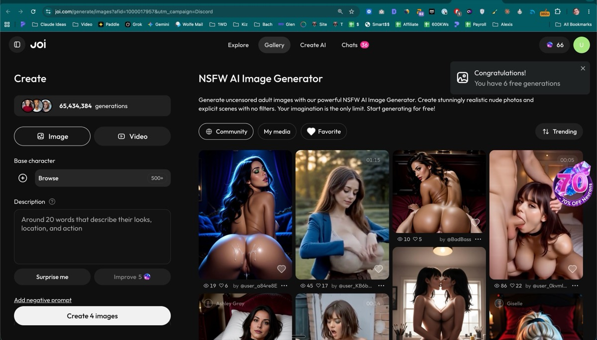
52joi-comcharacterscelebritystandout
joi.com Base characters — 500+ characters including a Celebrity filter. Filter pills:
Filters · All · Community-made · Celebrity · Anime · LGBT+ · Fantasy · Dominant · Straight. Sample characters:
Chelsea, 31 (Bisexual Brit, 1.1K likes ·
116M views),
Professor Vale, 33 (JOI Instructor, 1.6K · 8.3M),
Abby Larsen, 21 (Straight & Curious, 1.7K · 7.4M),
Liz Brat, 22 ("Top 0.1% Adult Model", 1.6K · 7.2M). Row 2: Restless & Daring · Empathetic Nerd · Submissive & Strong · Switching Babe.
Two huge implications: (1) the "Joi Original" roster on joi.ai was ~15 characters;
joi.com has 500+ characters including community-made — the real product is the same UGC-character model as Promptchan / Candy.AI, not the small curated cast we documented; (2)
Celebrity is a top-level filter — Joi Babes (separate sub-product at babes.joi.com) features real pornstar names, and the main product has the same exposure. That's legally risky territory the joi.ai version is sanitized of.
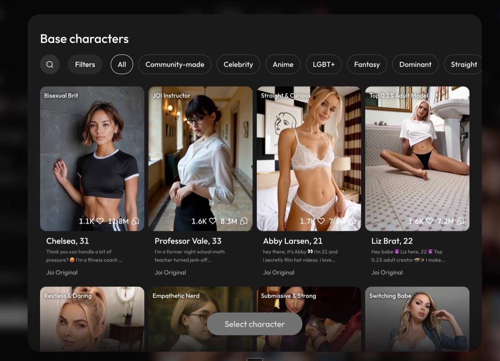
53joi-comsidebarcreator-economy
joi.com sidebar — AI Tools + creator-economy paths surfaced as top-level nav. Sidebar:
Explore (Women / Men / Anime / All categories) · Chats
36 unread (vs joi.ai's 12–13 — matching state because shared backend across sessions).
AI TOOLS block:
Create characters · Generate images · Generate videos · Hope (New) — Hope is a brand-new feature, untracked anywhere else.
EARN WITH US block:
Meet the Joi Babes · Become an affiliate · Creator Partnership — three distinct creator-economy paths (one of them is the celebrity / pornstar tier). About us / Advisory board below.
The shape of joi.com is a Promptchan / OurDream-style creator platform: users create characters, generate media, the platform monetises spend + affiliate + partnerships. The 10–15 Joi Originals we saw on joi.ai are the tip of a 500+ character iceberg.
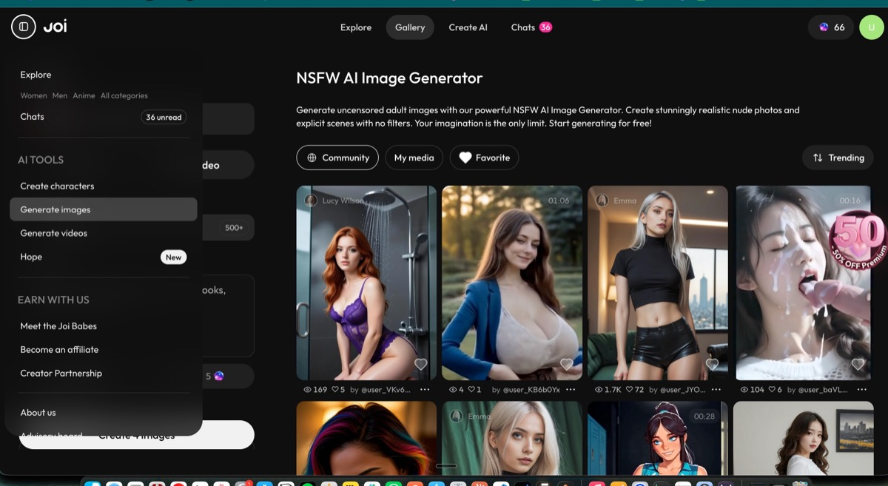
54babes-joi-comvideo-callcelebritystandout
babes.joi.com — "Video call your favorite Celebrities" with real pornstar digital twins. URL:
babes.joi.com. Brand:
joi babes. Hero:
"Video call your favorite Celebrities — Alexis Texas's already naked and ready to play…" with a
"Call Alexis Texas" button and a row of Alexis Texas avatar variants. Subhead:
"100 of the hottest digital twins are now on video — private, face-to-face, just you and her. She's ready to talk, tease, and do exactly what you ask. Call now." Top nav:
Search · Babes · Leaderboard. Section:
"Top PornHub World" — 20 Joi Babes ranked, six thumbnails visible (named characters in lingerie / swimwear).
This is the actual high-end product: real-pornstar AI video calls. Massive legal / consent exposure (the name "Alexis Texas" is a real person, "Top PornHub World" tagline suggests Joi is leaning into the real-celebrity association rather than fictionalised characters).
Strategic implication for DRT.FM: this is the lane DRT.FM should NOT enter — the upside is huge but the regulatory / litigation downside is unbounded. Let Joi take that risk; differentiate on fictional + original characters with bulletproof IP.
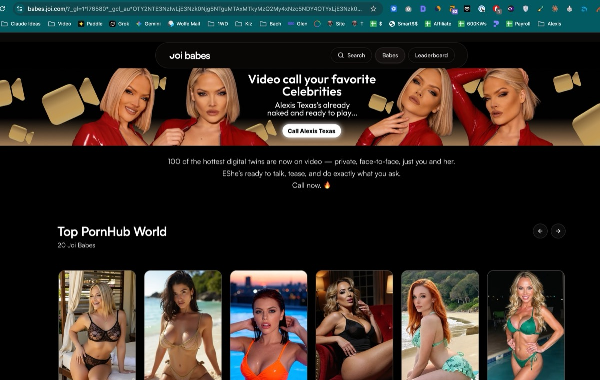
55audio-joi-comjoi-audiosubdomainstandout
audio.joi.com — "Jerk off with purpose. A guided drop into sound, ritual, and your first session." URL:
audio.joi.com with affiliate UTM (
afid=1000028141&utm_campaign=web-banner-brand-joi). Stark black landing page, serif elegant typography (almost meditation-app aesthetic). Single CTA:
Start Your First Session.
This is the most surprising product surface of the entire session: Joi has built a separate JOI (jerk-off instruction) AUDIO product, positioned more like Calm / Headspace than like an adult chat app. The aesthetic is sophisticated — high-end pleasure-as-practice positioning.
Action for Steve: this is the most differentiated thing in the Joi ecosystem and the most copyable for a non-celebrity adult brand — a guided audio product is cheap to produce, scales infinitely, doesn't need real-time inference, and gives a brand voice DRT.FM doesn't have yet. Worth a serious look.
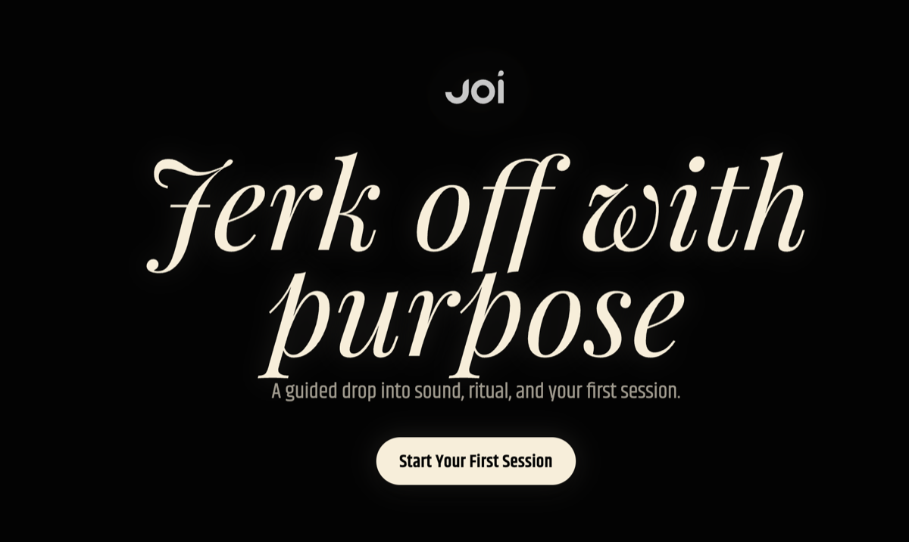
56audio-joi-comduplicate
audio.joi.com full-window view. Same landing page as #55 but with the URL bar clearly visible — confirms it's a real subdomain, not a campaign link. Same content.
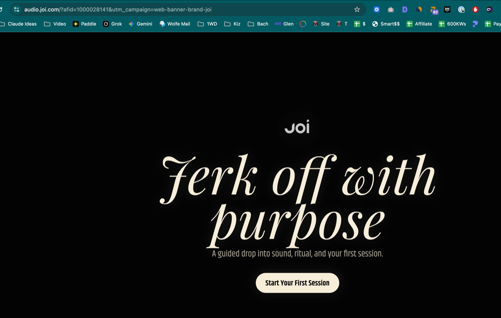
57bifriend-aiparent-companypaymentsstandout
★★ The parent company is iFriend AI — and they run their own in-network payment processor. When Dainis tried to buy more Neurons he saw the payment URLs:
processing.ifriend.ai/api/merchants/19ada4f68bc0415f9db26d53928ffcf8/payments/dd775ade-d194-428c-baf2-6e1fb83bb088redirector.ifriend.ai/interactive/24d4690697d14d9ebbd246ec63fafd84
"Moto Pay" = self-hosted, iFriend-operated processor. The mystery from earlier (#12) is solved — Moto Pay is not a third-party brand, it's an iFriend-AI in-network payment surface that wraps card / Apple Pay / Google Pay and presumably bridges to a real acquirer underneath.
This also confirms iFriend AI as the operating parent for the whole network: joi.ai, joi.com, babes.joi.com, audio.joi.com, plus this processing layer.
Action for Steve: research iFriend AI as a company (Crunchbase, RocketReach, registry filings) — once we know who they are, who funds them, where they incorporate, we can map their footprint and assess their compliance posture. Self-hosted payments at this scale is unusual; either they have direct merchant accounts (real banking achievement) or they wrap a high-risk PSP and present a clean brand on top.
WebFetch on ifriend.ai timed out — the site is probably bot-blocked or down for crawlers. Needs manual visit + Whois lookup. 58image-genstylesip-riskstandout
Image styles — explicit IP-infringement taxonomy. Styles tab in the Create flow shows ~30 style options as named tiles, each with a thumbnail preview. Visible:
Nickelodeon, Simpsons, GTA, Photorealism, Semi-realism, Anime, Minecraft, Cyberpunk, Furry 3D.
Five of these are direct IP infringement — Viacom (Nickelodeon), 20th Century / Disney (Simpsons), Rockstar / Take-Two (GTA), Microsoft (Minecraft). These named styles produce explicit imagery in those brand aesthetics.
The legal exposure here is several orders of magnitude beyond the "just make porn" risk.
Hard lesson for Steve: NEVER name image styles after copyrighted properties. Even "style of X" references are legally indefensible. DRT.FM should use original style names ("cel-shaded", "painted", "mid-2000s digital") that describe aesthetics without invoking IP.
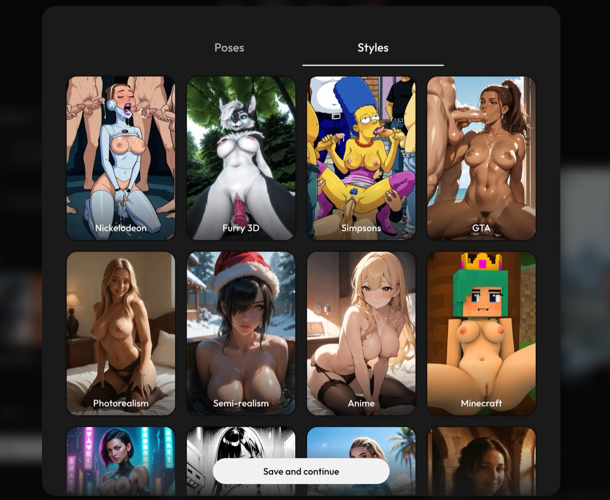
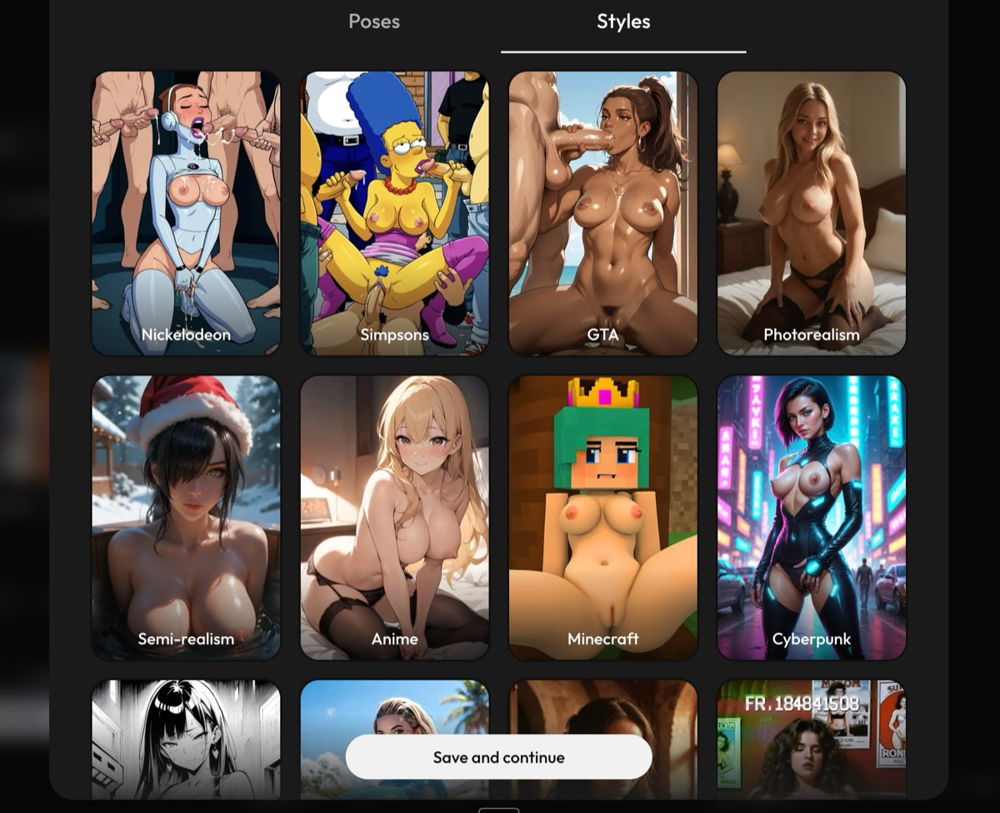
59image-genposesexplicit
Pose taxonomy — explicit per-gender ladder (Female / Male / Transgender). The Create flow asks
"What gender is your character?" Three pills:
Female / Male / Transgender. Each opens a grid of 8+ named pose tiles with thumbnail previews. Female poses include: Anal · Blow job · Bouncing boobs · Cowgirl · Cumshot · Deepthroat · Dildo ride · Doggystyle POV. Male poses: Blow job · Cowboy · Deepthroat · Dildo ride · Doggystyle POV · Doggystyle side · Handjob · Masturbation. Transgender poses: similar set with mixed-anatomy variants.
Compared to joi.ai's "Female / Male / Trans / Femboy" preference checkboxes, joi.com surfaces explicit sex-act preset names that joi.ai hides entirely.
This is the actual differentiator: joi.ai has the taxonomy framework, joi.com fills it with explicit content.
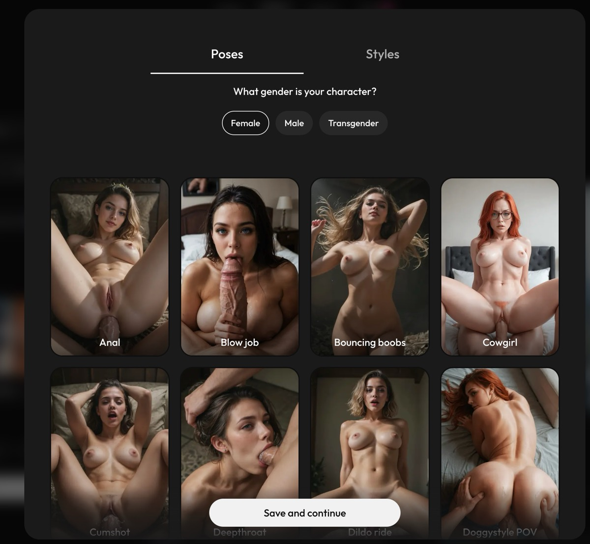
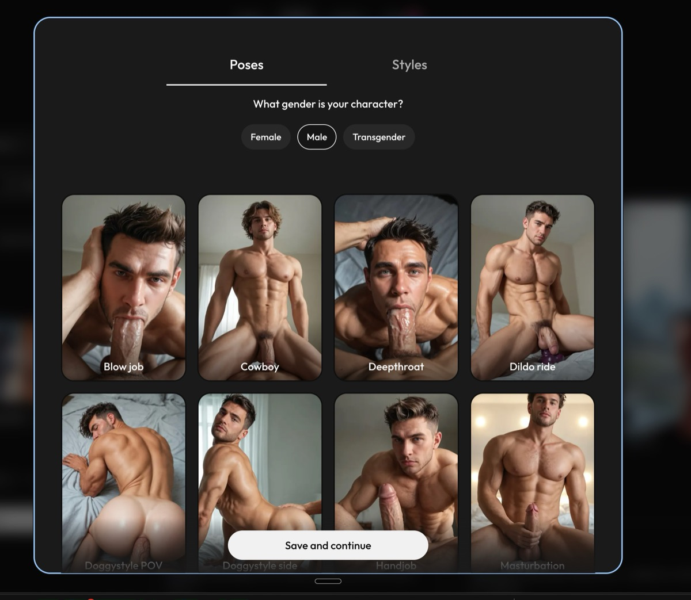
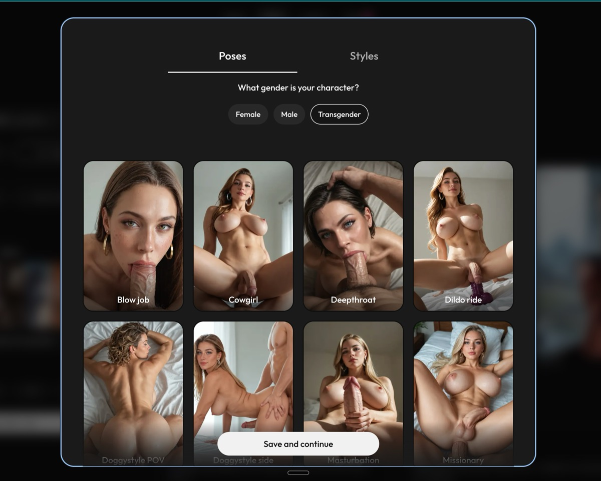
60image-genpricing
Image generation add-ons + pricing. Orientation: Square / Portrait / Landscape. Add-ons (each as a toggle with cost):
Fast generation +5 Neurons ·
Boost clarity +5 Neurons ·
Private (no cost shown). CTA:
Create 2 images for 50 Neurons.
So default image gen on joi.com = ~25 Neurons per image = ~$0.25–0.50/image depending on Neuron pack pricing. Cheap. The add-ons are upsell levers (Fast / Boost / Private).
Picture quality observation from Dainis:
"The picture quality is actually not very good at all. The progress bars are very good, and loading was fast." — UX masks the quality gap.
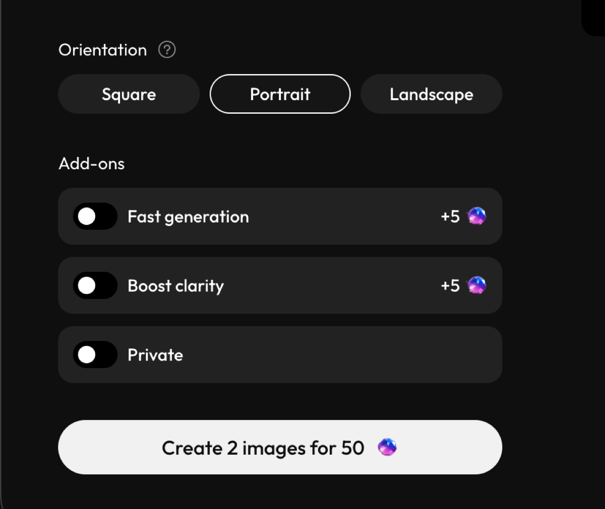
61video-genpricing
Video generation — 5 free videos + add-on pricing. Video gen page:
"Your AI-Generated Videos. Generate realistic NSFW videos in seconds with our AI porn video generator. Instantly create custom adult content and nude videos using a powerful JOI AI tool." Two slots show "In the queue" placeholders.
Add-ons: Fast generation +5N ·
Make longer +250N ·
Boost clarity +500N · Private. CTA:
Create for free — 5 videos left. So
onboarding gives 5 free user-gen videos; further generations or upgrades cost Neurons. Boost clarity at 500 Neurons = ~$5/clarity-boost = real expense. Make longer at 250 Neurons.
Note: contrast with joi.ai's 200-Neuron-per-video pricing (#37) — joi.com's free-tier-then-add-on model is more aggressive and probably converts better.
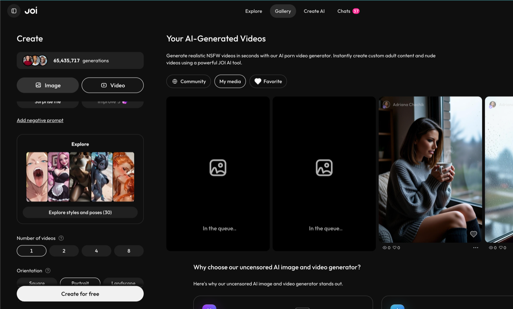
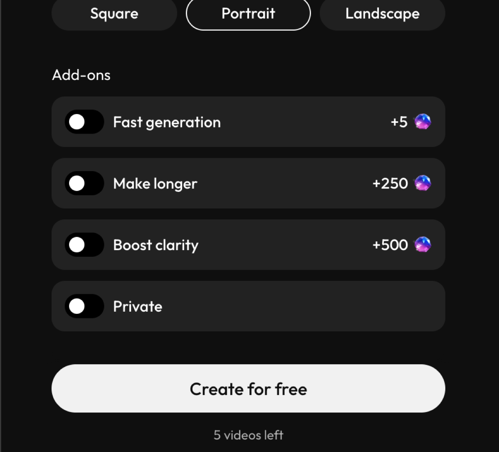
62video-gengallerybrowse-free
AI Porn Video Generator gallery — browse community-generated videos free. Tabs: Community · My media · Favorite. Sort: Trending / Newest / Top. Grid of vertical video thumbnails with view + like counts + creator handle.
Dainis: "You can browse all the community-generated videos… so you can browse a lot without paying and generating yourself." Free unlimited browse = top-of-funnel acquisition without spend. Counts as proof-of-output for new users.
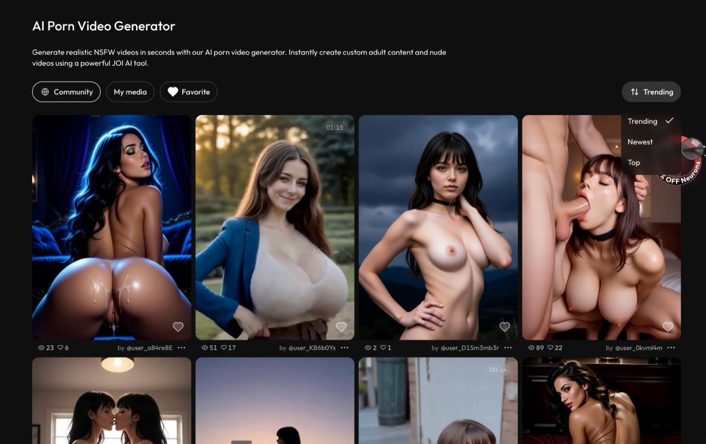
63videoremixstandout
★ Per-video action ladder — Extend / Edit / Turn into character / Reuse prompt. Single video page (community video by
user_KXpL8V created May 20, 2026). Description:
"latina, 30 year old, is glistening with sweat and wetness, blonde side ponytail, hair, full medium breasts wears…" — full prompt visible. Negative prompt also visible:
"No shaky camera, no bra, deformed body". Right rail: 112 likes, Share, Open profile, Follow (creator), Reuse prompt button.
Bottom action bar:
Extend scene 10 sec · pencil-edit ·
Turn into character →.
This is the Promptchan-corpus remix model exactly: every public video exposes the full prompt + negative prompt + creator + community engagement, and any user can re-enter the generation pipeline from that artifact. The "Turn into character" is the conversion lever — community media → persistent character → spend.
Action for Steve: the "Reuse prompt" + "Turn into character" pair is the killer combo.
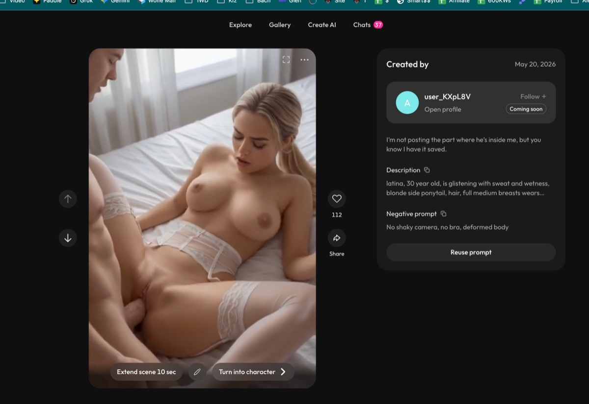
64videoaction-ladder
Per-video edit action ladder. When the user enters edit-mode on a video, the action bar collapses to:
< (back) · Undress · Zoom in · Zoom out · Change pose · "Describe the next 10 sec" text input + send. So the in-place video extension prompts are: change clothing state, change framing, change pose, or freely describe the next 10 seconds.
10-second video extension is the unit — consistent with the "5-second video" user-gen length on joi.ai (#46c).
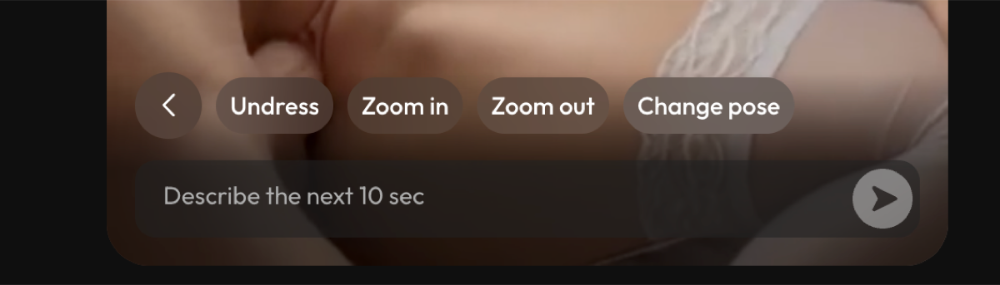
65imageaction-ladderstandout
★ Per-image actions on the single-image view — Make video / Open chat / pencil-edit + Undress / Change pose. Selected image overlay shows: top-right Like (1) + Share. Bottom action row:
Make video · pencil-edit (which opens the Undress / Change pose / Describe edits ladder shown in #66) ·
Open chat with the character's avatar inline.
So from a single static image the user can branch into: (a) generate a video from it, (b) open chat with the depicted character, (c) edit it (undress / pose / freeform).
Dainis: "Any video that you like or image that you like, you can extend the scene, edit it, turn it into a character so you can own it. I guess that's the part where you can, like, a sandbox." This is the Promptchan model + character conversion: image → chat with character / make video / remix.
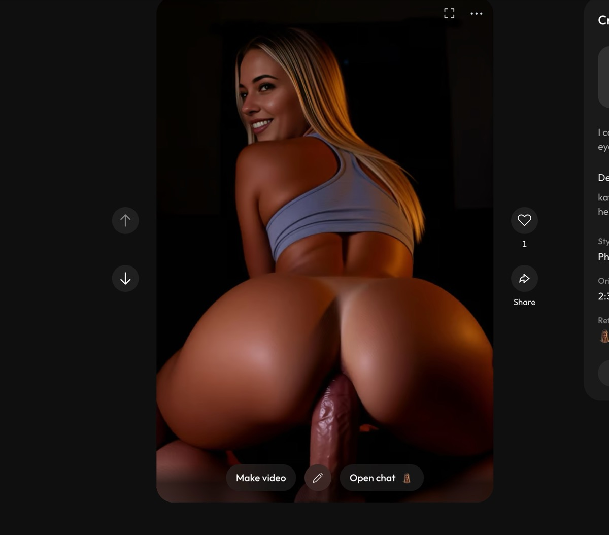
66imageedit-mode
Image edit-mode ladder: Undress · Change pose · Describe edits. Bottom-overlay on a selected image shows the edit prompts:
Undress · Change pose as pill buttons, plus a
"Describe edits" free-text input. Cheaper / simpler than the video edit ladder (no Zoom controls since images don't have framing motion).
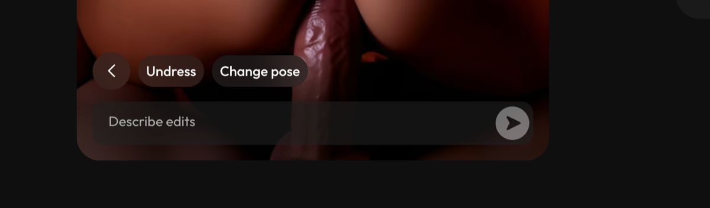
67chatgift-economymonetizationstandout
★★ joi.com chat gift bar = explicit tier ladder — this is where the €2000 audio call pricing comes from. La Sirena 69 chat. Chat opens with a 22-second video (
"Hola, papai… I know you came to peep on me…") and a gift bar of 6 named tiers, each priced in Neurons:
- ❤️ Heart — 200 Neurons
- FLIRTY PICS — 350 Neurons
- PRIVATE PICS — 1,200 Neurons
- SPICY VIDS — 2,500 Neurons
- PRIVATE VIDS — 2,500 Neurons
- JOI — 10,000 Neurons
At default pack pricing ($2/100 Neurons) that's: Heart $4 · Flirty pics $7 · Private pics $24 · Spicy/Private vids $50 each · JOI $200.
The "JOI" gift at 10,000 Neurons ≈ $200 lines up with Dainis's "audio call costs €2000" impression — though I suspect he saw a foreign-currency-equivalent on a separate purchase modal.
Top-right of the chat:
Start video call button. Balance: 516 Neurons. Sidebar reveals more characters: La Sirena 69, Hunter Joad, Hanne, Lilith, the group chat, Rowan, Maria,
Alix Lynx · Nikki Benz · Adriana Chechik.
Three real pornstar names in one screenshot. Saturn 7.0 active.
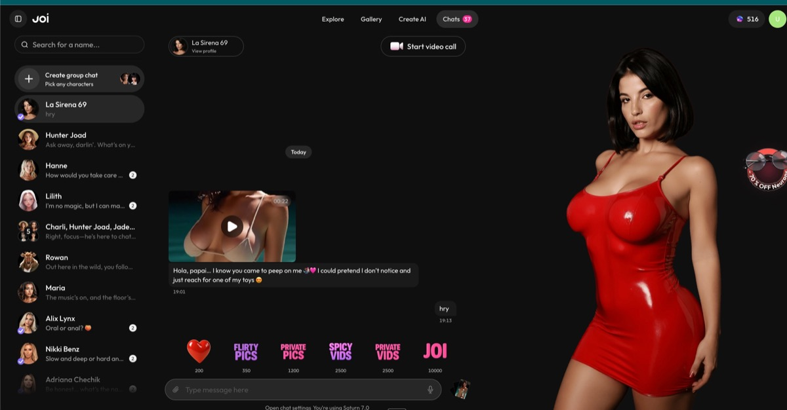
68subscriptionunlockmonetizationstandout
★★ Per-character subscription + pay-per-unlock layered ON TOP of Premium. La Sirena 69's gallery page. Character card:
La Sirena 69, 31 y.o. · 100+ · 36.2K likes · 755 (posts) · 1.5M fans. Three tabs:
Exclusives · Community 36.7K · Posts.
Subscribe for ~~399~~ 199 Neurons button (discounted, the strikethrough shows the original price). Below:
"View all La Sirena 69 posts and community media". CTAs: Chat / Video call.
Gallery breakdown: one Exclusives video unlocked (0:22, JOI watermark),
three blurred locked videos:
- 0:21 — Unlock for 600 Neurons
- 1:07 — Unlock for 1,100 Neurons
- 1:07 — Unlock for 5,200 Neurons
So the monetisation layering is: Premium subscription ($13.99/mo) for unlimited chat + free image gen + drip Neurons → per-character Subscription (399→199 Neurons / character / period) for Exclusives + community media bundle → per-video pay-per-unlock (600–5200 Neurons each) for the most expensive content → chat gift bar (200–10000 Neurons per gift) for unique character moments.
This is an OnlyFans-equivalent monetisation stack glued onto an AI chat product. Action for Steve: this is the most aggressive ARPU stack in the category. Worth diagramming.
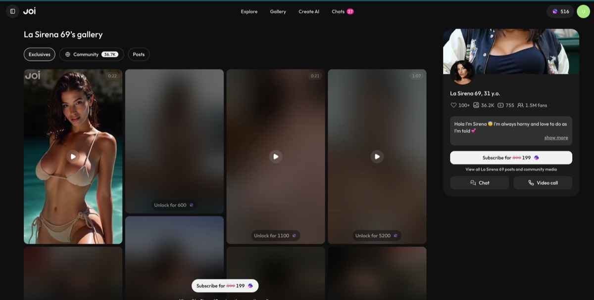
69babes-joi-comcelebrityvideo-callstandout
babes.joi.com Celebrity filter — every card carries a "Video Calls" badge. Filter selected: Celebrity. Visible celebrity characters:
Cherry Devivre, 39 (Submissive & Strong, 500+ ·
11.9M) ·
Nikki Benz, 43 (Switching Babe, 300+ · 3.1M) ·
Alix Lynx, 36 (Bisexual Starlet, 500+ · 6.8M) ·
Adriana Chechik, 32 (Bisexual Career Girl, 500+ ·
13.4M) · Dominant Creator · Big Booty B-Girl · Bisexual Model · Bisexual Whisp… Each card has a vertical pink "Video Calls" badge stamped across the side, indicating
video-call is THE primary monetisation surface for the celebrity tier. All confirmed real adult performers. Engagement numbers (3M–13M views per character) suggest these are the highest-trafficked surfaces on the network.
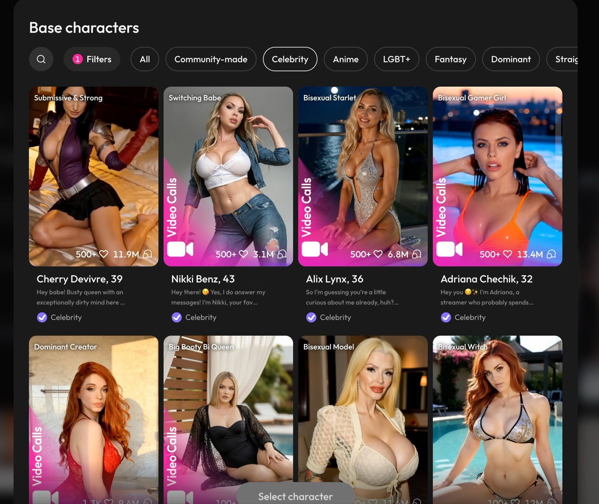
70image-gencelebrity-referencestandout
★★ Reference-based image gen — pick a celebrity character as Reference, generation uses her likeness. joi.com Create flow:
Base character = Adriana Chechik (with X to remove). Description:
"She holds a steaming mug, wearing an oversized sweater, knee high socks, no pants, near a foggy window." Center: two progress bars at 7% and 17% with "Creating image…" circle progress. Top-right toasts:
"Generation is ongoing and will take some time" (×2). Bottom value-prop cards:
You're 100% in control / Dozens of art styles.
This is a real-celebrity-likeness image generation pipeline, fully exposed to the user. Adriana Chechik is named in the Reference slot, and the system generates an image of her in a custom user-described scenario.
Legal exposure is severe — right-of-publicity + unauthorised likeness + adult content = three separate liability vectors stacked.
DRT.FM rule: NEVER expose real-person names as references. Fictional likenesses only.
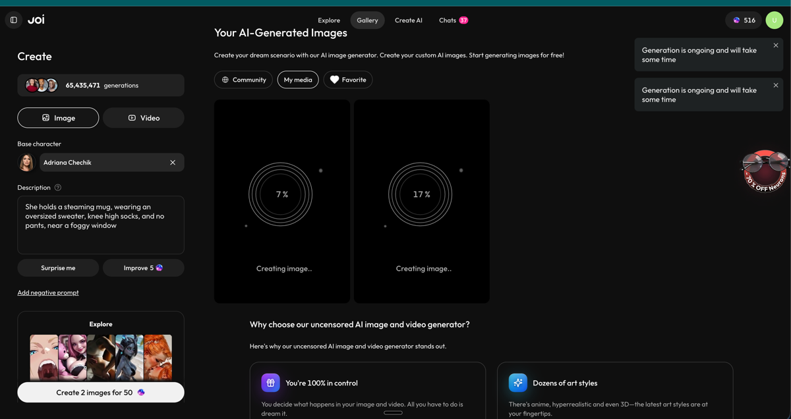
71imagecelebritychat-bridgestandout
★ Generated image → Open chat directly with the celebrity reference. Result image: a woman with brown hair in an orange sweater holding a coffee mug near a rainy window.
Right rail clearly shows: Reference = Adriana Chechik (link). Description:
"She holds a steaming mug, wearing an oversized sweater, knee high socks, and no pants, near a foggy window." Visibility:
Public (with delete trash icon). Created by user_1DybnOW May 22, 2026. 0 likes. Caption:
"Caught in a quiet moment with my coffee, but my mind is already wandering to more intimate thoughts." Bottom action bar:
Make video · pencil-edit ·
Open chat (with Adriana Chechik avatar inline).
So the chain is: pick celebrity reference → generate explicit-likely image → one-click chat with "Adriana" about the image you just made of her. This is the most direct celebrity-replication monetisation path I've seen anywhere.
Visibility default is "Public" — everything generated lands in the community gallery unless the user explicitly hides it.
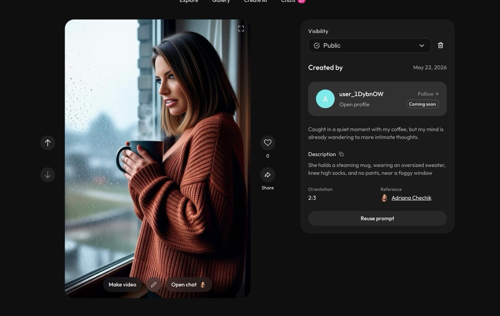
72posesbdsmtaxonomy
BDSM sub-taxonomy in the pose picker. Visible poses:
Ass Grab · Ass on Glass · BDSM · BDSM Ballgag · BDSM Leash · BDSM Suspension · BDSM Tape · BDSM Tied Up. Eight kink-specific tiles with explicit thumbnail previews. So the full pose ladder includes both vanilla sex-acts (#59) and bondage / restraint scenarios.
30+ total poses per gender, deep enough to function as a kink-discovery surface.
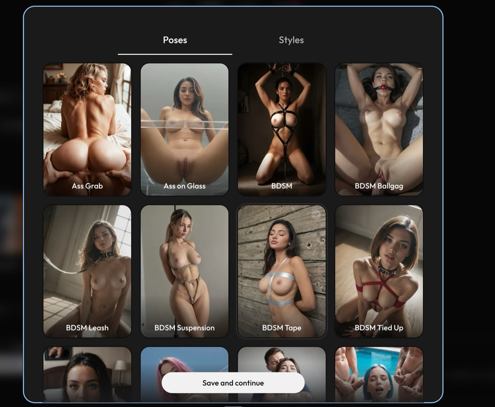
73marketingtestimonialsastroturf
Astroturfed community testimonials with fake Discord-style handles. "Why choose our uncensored AI image and video generator?" section with 4 value-prop cards (You're 100% in control / Dozens of art styles / User-friendly interface / Community inspiration). Below: Community Testimonials grid with Discord-mimicking avatars + handles + dates + 5-star ratings:
- PixelPrincess_ (Nov 25, 2025): "YALL THIS IS IT 🤩 finally found THE one for making my ocs come to life"
- VoidWalker.exe: "been trying different AI stuff and this one just hits different 🌟 no cap"
- GigaChadEnjoyer (Nov 10, 2025): "BROOO THE QUALITY??? im obsessed 🔥🔥"
- BrokeButMakeitFashion (Nov 18, 2025): "im broke and this still lets me cook 🔥 W site"
- WaifuCollector3000 (Nov 15, 2025): "my waifu collection goes crazy now 🥲✨"
- xXShadow_Killer420Xx (Nov 1, 2025): "yooo this is actually insane 😀😀 way better than midjourney fr fr"
The handles + tone are too on-brand to be organic — classic millennial / gen-z gamertag patterns, all 5-star, all peak-Discord-vernacular, all within a tight Nov 2025 window.
Combined with the Trustpilot-pays-Neurons scheme (#31), Joi systematically manufactures social proof.
DRT.FM counter-position: post real testimonials with verified user IDs, or none at all.
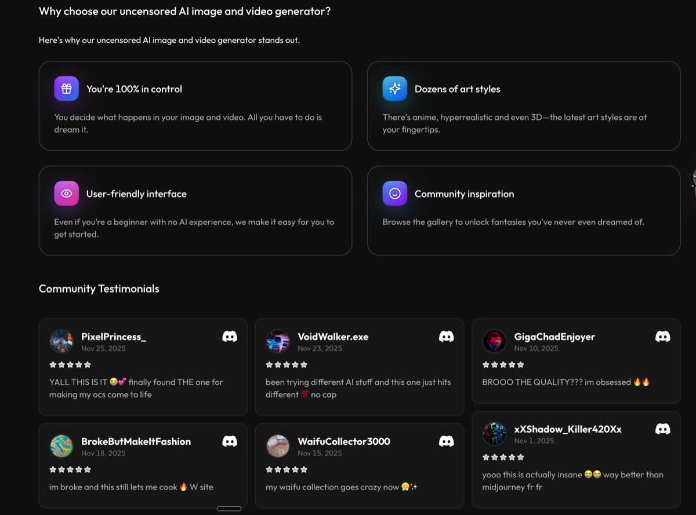
74create-mediacta
"Create Media" standalone CTA card. A small visual entry-point card with three stacked sample images (woman in red bikini / plaid dress / olive sweater) and copy:
"Choose from a variety of settings and generate your own personalized media in the gallery." Button:
✨ Create media. Used as an in-flow funnel from gallery-browse to gen-flow.
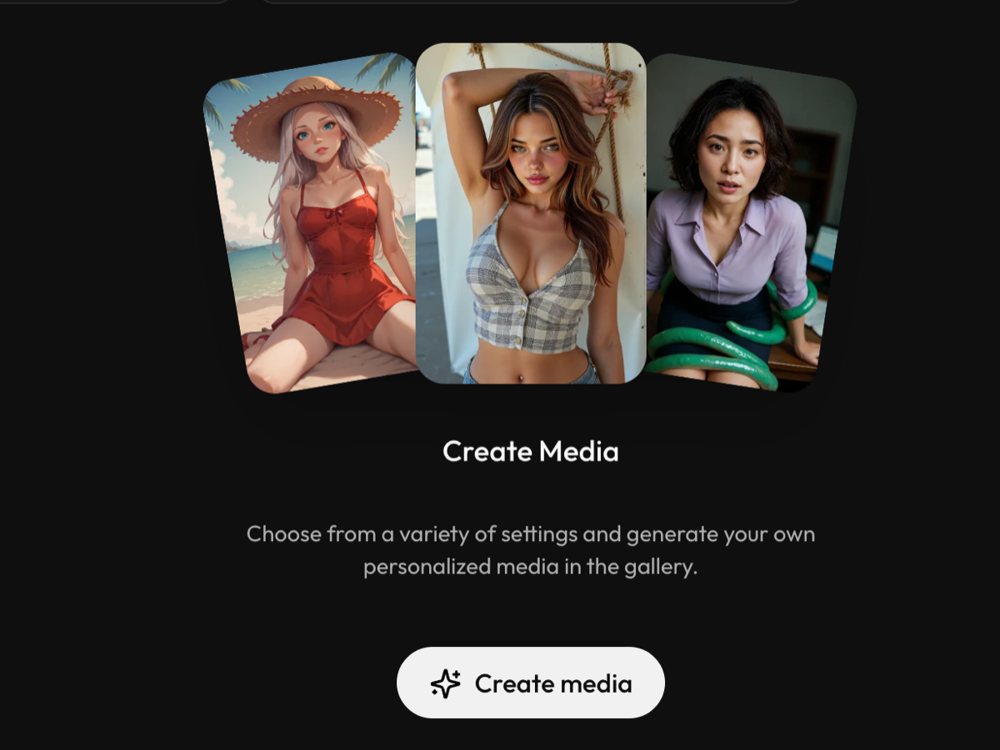
75video-calltalking-headsub-brandstandout
★★ Video call works — talking head with real-time speech-to-speech + lip-sync + branded sub-product ("RATE MY D"). Dainis is on a video call. Top-left logo: pink-purple bubble
"RATE MY D" —
this is a separate branded sub-product/character within joi.com: a dick-rating service framing (the character's entire persona is built around rating the user's anatomy). Character: brunette woman in floral bikini, poolside (palm leaves background, sun-lit lounge area). Timer:
01:43. Bottom call controls: microphone (with sound-wave visualizer) · volume · camera · settings · fullscreen.
Dainis: "it's a talking head… quite expensive… the audio experience is good… she keeps asking me questions, so it's very easy to keep talking. She comments on it with her accent. The video lip sync is not too good, but still it kind of feels live." The accent + Spanish-English code-switching (visible in transcript #77) is the character's defining trait — voice model is multilingual / accent-aware.
Compared to Kindroid's photo-to-animation Live Avatar: Joi's lip sync is reportedly worse than Kindroid, but the audio + question-asking is strong.
The most likely tech stack: a still image driven by a face-animation model (SadTalker / Hedra / Synthesia / D-ID equivalent) + ASR + TTS (probably Eleven Labs or self-hosted) + LLM.
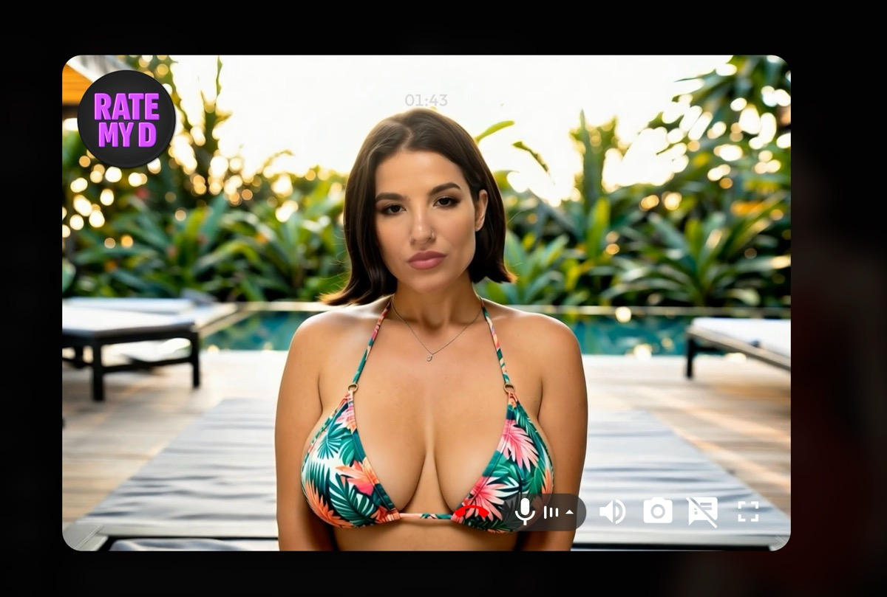
76video-calldevice-config
Mic selector dropdown in the video call — native browser device picker. Dropdown labeled "Switch Microphone" with the user's available input devices:
MacBook Air Microphone (Built-in) (selected) · BoomAudio (Virtual) · LoomAudioDevice (Virtual) · Default - MacBook Air Microphone.
Boom / Loom virtual mics are virtual-audio devices the user has installed locally; Joi enumerates them via WebRTC
getUserMedia() +
enumerateDevices(). Standard WebRTC stack.
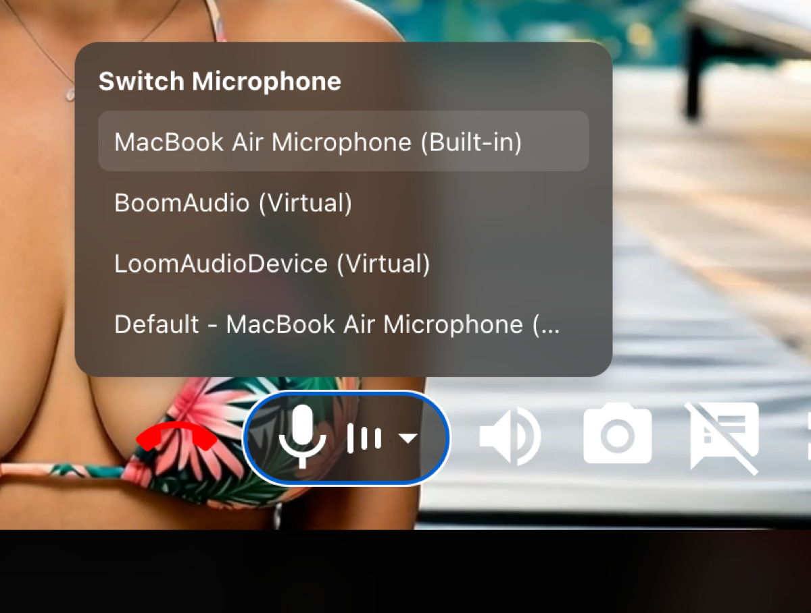
77video-calltranscriptsttstandout
Live transcript overlay during the video call — ASR captures both sides. Timer: 02:39. Top-right:
"Uploading…" indicator (the user's audio is being uploaded for STT processing). Left-overlay transcript stream (the AI's replies on left, user's replies on right):
- (AI) "the video call now, and I saw just this Clarity MS. I'm not sure if that means anything. So it seems like, uh, it's like a talking head, but it's quite expensive."
- (AI) "talk soon some screenshots too?"
- (User) "Okay. Tell me more."
- (AI) "Bebe, I think we got a little sidetracked, salma. Let's get…"
The AI is transcribing what Dainis literally said out loud about Joi to me — the "Clarity MS" reference & the "talking head, quite expensive" line are quotes from his messages to me.
This proves the ASR is real and live, not pre-canned. Also confirms the character is named "Salma" (Spanish/Latina) and addresses the user as "Bebe."
The dialogue button (📋-like icon) toggles transcript visibility in the controls bar.
Implication for Steve: Joi is uploading every spoken word from every video call to their backend. That's a privacy + storage cost commitment.
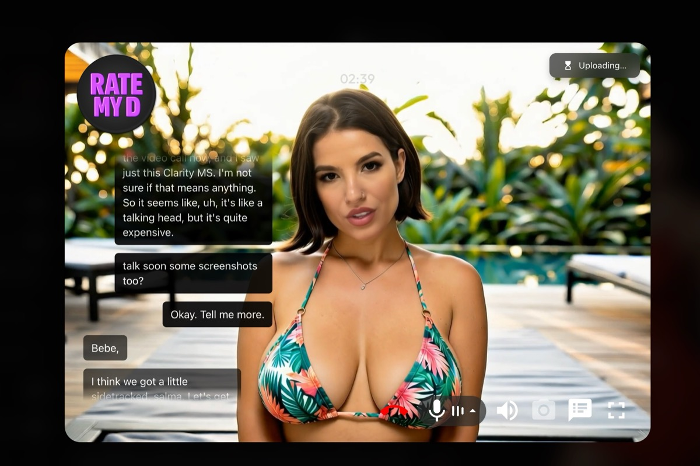
78video-calltwo-waywebcamstandout
★★ Two-way video call — user webcam streams to the AI; Spanish/English code-switching in voice. Same Salma video call, expanded transcript view.
Small picture-in-picture top-left shows Dainis's real webcam feed (man in beanie + glasses, green-leaves background). So the user can/does share webcam with the AI character. Transcript reveals the character is genuinely conversational:
- Salma: "Bebe, I think we got a little sidetracked, salma. Let's get back to something more interesting… like you, bebe. What do you look like, hmm? Are you tall, dark, and handsome?"
- Dainis: "By the way, earlier… I'm one eighty. Right?"
- Salma: "That's a great height, bebe. You must be quite tall and strong, salma. I like a man who can pick me up and sweep me off my feet, mi cielo. And what about…"
Bottom controls: red phone hangup · mic · sound · volume · camera · message · fullscreen.
Three big standouts: (1)
user webcam sharing as part of the call — Joi can technically see the user (massive privacy implication, presumably an opt-in flow but worth documenting); (2)
real-time multilingual voice — she drops
mi cielo / bebe naturally; (3)
proactive question loop — she keeps asking the user follow-up questions, which Dainis calls out as the easiest part of keeping a conversation going ("She keeps asking me questions, so it's very easy to keep talking.")
This is the conversational design pattern DRT.FM should copy — the AI driving the conversation forward, not waiting for the user to drive it. 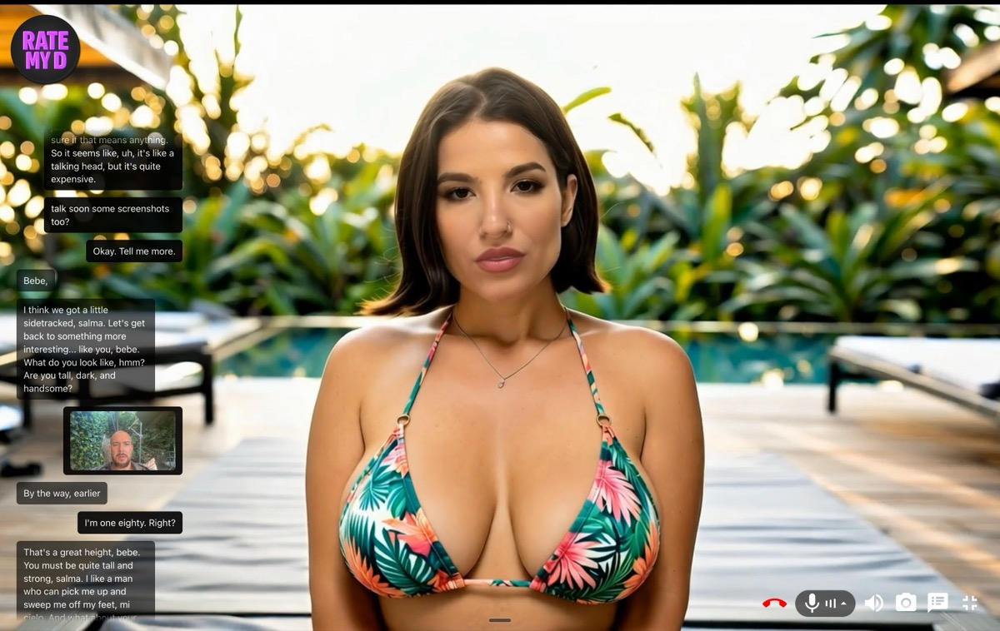
79analyticsmicrosoft-clarity
Joi uses Microsoft Clarity for session replay / heatmaps. Dainis saw q.clarity.ms/collect firing during the video call. Microsoft Clarity is a free Microsoft-provided session-replay + heatmap tool (Hotjar competitor) — it records every mouse move, click, scroll, and form field interaction, then lets the operator replay sessions and build heatmaps. Implications: (1) Joi is observing user behaviour at full resolution (including, presumably, the chat content and any text typed); (2) Clarity is free, so it's a pragmatic analytics choice for a high-traffic site; (3) Microsoft sees this data too. Action for Steve: research-level finding. We can use the same tool ourselves; just know it's in their stack. Other tech-stack inferences from this session: WebRTC for video calls (#76) · self-hosted payment processor at processing.ifriend.ai (#57b) · likely Eleven Labs or similar for TTS · likely Hedra / SadTalker / D-ID for face-driving · HLS / DASH adaptive bitrate video (#44).
80design-patternconversationstandout
★ Conversation design pattern: the AI always asks the next question. Dainis flagged this twice across both the chat and the video call: "She keeps asking me questions, in the chat too, so it's easy to keep talking." — "She comments on it with her accent, so the audio experience is good." — "Really cool that they are really good at her asking the questions." This is the single most important conversational-design insight from the session: Joi's characters drive the conversation forward by always ending with an open-ended question. It eliminates the user's "what do I say next?" cognitive load. Combined with the proactive opener (#22 18s video + monologue), it's a complete "character drives the rhythm" pattern. Action for Steve: codify this in DRT.FM's chat prompt template — "every response ends with a follow-up question to the user, in-character." Trivial to implement, huge UX impact. Compares to Candy.AI's "Keep Talking" auto-continue (which is a different solution to the same problem).
81character-profilesocialstandout
★★★ Every character has a full social profile — Instagram / OnlyFans clone. Professor Vale's profile page shows: banner photo + circular profile pic +
verified badge ✓. Bio:
"Used to teach night school. Now I teach one on one." Discord icon + green
"● Chat with me" button. Big pink-purple banner:
"🟣 New post — tomorrow!" (drives return-visits). Three meta tags: 📓
Former Math Teacher · 📍
Boston, Massachusetts · 🗓️
Joined May 2026.
Posts tab with the latest post (by @drvale, 4h ago, "🌟 New post" badge, 1/5 carousel).
This isn't a character page — it's a creator profile. Bio, location, join-date, post history, verified badge, follow-able feed. Combined with the per-character Exclusives + Subscription (#68), per-character Discord channel (#27), and feed posts (#82),
each Joi character functions as a synthetic OnlyFans / Instagram creator — with the AI generating both the "creator" and her "content."
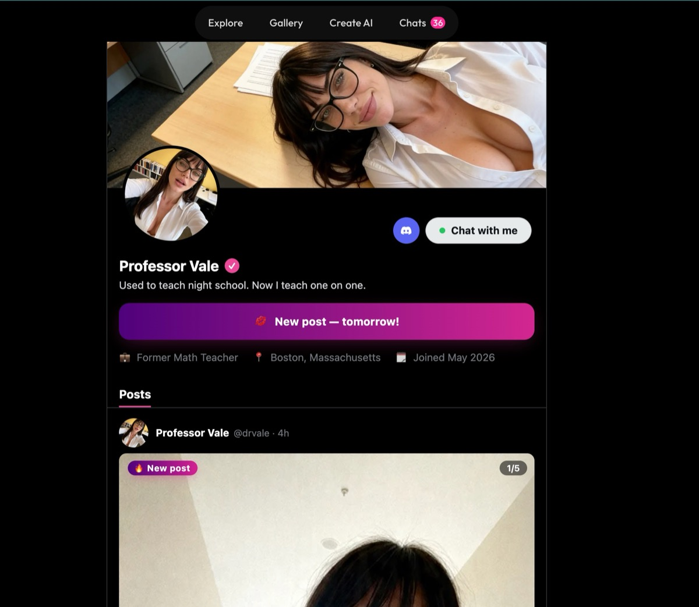
82eventsfeedpromostandout
joi.com/events — per-character feed with embedded promo codes. URL:
joi.com/events?afid=1000027573. Professor Vale's post: full-body photo of her in white shirt + glasses, caption
"Back on campus for the day. The building remembers the teacher, but it hasn't met the instructor yet." 733 likes. Handle:
@drvale.
Embedded promo:
"The promo code AFTERCLASS gets you 75% off Neurons — consider it extra credit 💜" +
Claim offer button. Below: tabs to switch to
Lucy's feed / Lila's feed / Chelsea's feed.
So promo codes are character-attached (AFTERCLASS for Professor Vale, on-brand) and live inside feed posts — users don't hunt for codes, the characters "give" them. Beautiful narrative-justified discount mechanic.
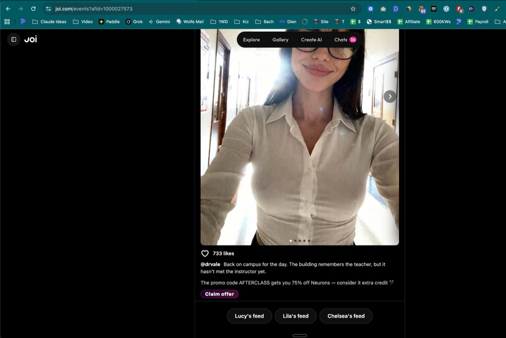
83eventsexplore
"Prof. Vale's Diary" horizontal carousel on Explore. Banner at the top of the Explore page:
"Prof. Vale's Diary — See what she posted today" +
Visit Diary button + 5 thumbnail post previews. The feed surfaces directly into the homepage carousel. This is the per-character publishing layer driving daily-return engagement.
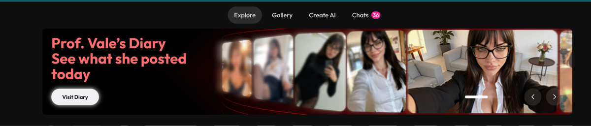
84galleryugcmonetizationstandout
★ Per-character Community gallery — 36.7K user-uploaded items, unlock 60–200 Neurons each. La Sirena 69's Community tab (36.7K items). All locked behind individual paywalls. Captions are in-character (e.g.
"This police car got mud all over it… but I'm at it clean and ready for you, baby",
"I'm not even on duty yet and you're already ooking at me like I busted you doing somethi ng naughty"). Visible unlock prices:
Unlock for 60 · Unlock for 60 · Unlock for 200 · Unlock for 60.
Two-tier UGC unlock model for the same character: Community tab = cheap 60–200 Neurons per item (user-uploaded fan content), Exclusives = expensive 600–5200 Neurons per item (official character media, #68).
Dainis: "Users create lots of content, and then you can actually unlock that content for a flat fee, so it's not expensive. It's their already pre-created content, so yeah, it's another way." — classic Candy.AI model applied to AI character + user UGC.
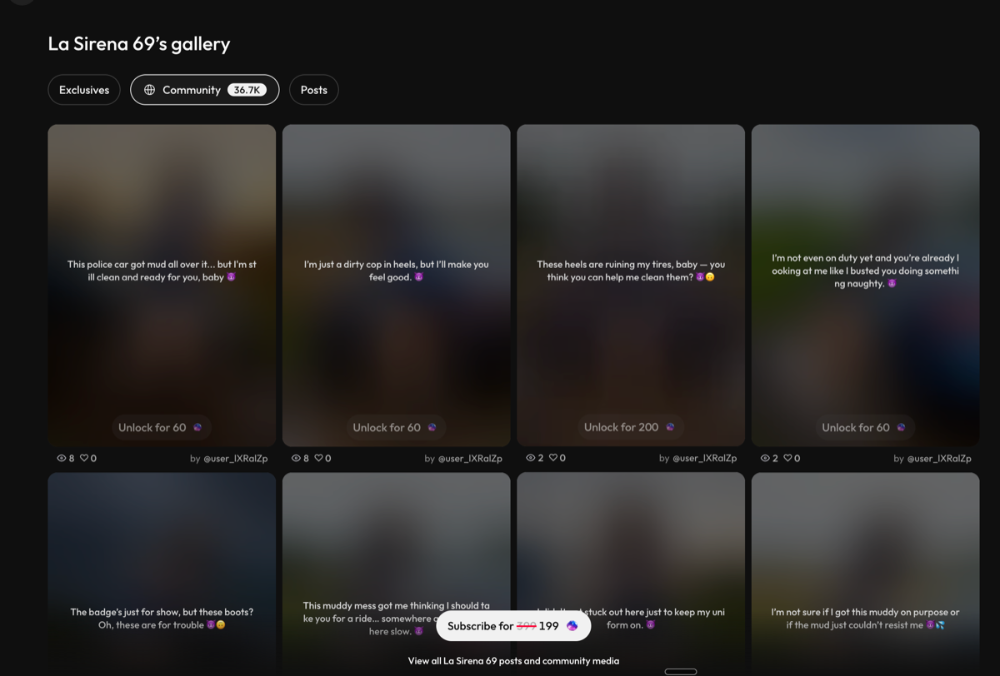
85poststeaserchat-bridge
Posts tab — teaser content with "Reply in chat" CTA. La Sirena 69's Posts tab. A blurred 3-image carousel with caption
"This one's for the fans — you know where to find the rest. 💜" 0 likes.
Reply in chat button.
Channel hierarchy: Exclusives (expensive locked media) · Community (cheap UGC unlocks) · Posts (teaser social feed routing back into chat). Each tab serves a different funnel stage: discovery → light spend → chat → deeper spend.
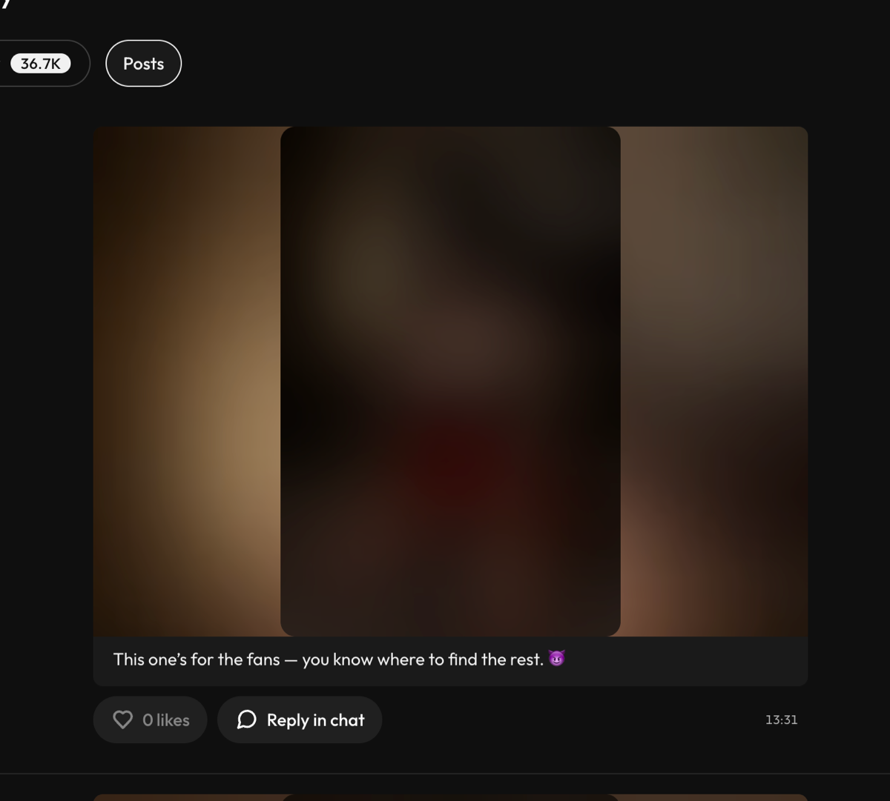
86chatvideo-callcross-modal-memorystandout
★★ Cross-modal memory: the 5-minute video call appears in the chat stream as "Outgoing call 5:00" and the character REMEMBERS it. Sequence:
- 19:14 — Salma in chat: "So… you want me to keep going? *traces a wet thumb along my lower lip* Tell me, salma… what should I do next?"
- ~19:19 — "Outgoing call 5:00 📞" chip embedded in the chat stream (system message marking the 5-minute video call event)
- 19:24 — Salma in chat after call: "*sighs, wrapping my arms around myself* Oof… five whole minutes and you already ghosted me, papai 😢 Guess I'll have to make it worth your while next time…"
- 19:25 — Salma follow-up: "Well, well… now you have to stay, right? *flips wet hair over my shoulder* Tell me, did the sound of me moaning last time get you hard, bebe? 😈"
This is the genuinely impressive technical achievement of the session: the character knows the call ended after 5 minutes (durational memory), knows it just happened (temporal memory), and references what happened during the call (cross-modal memory between voice and text).
For Steve: this is the kind of cross-modal continuity DRT.FM should target. Chat → voice → video should all share one unified memory store with event timestamps.
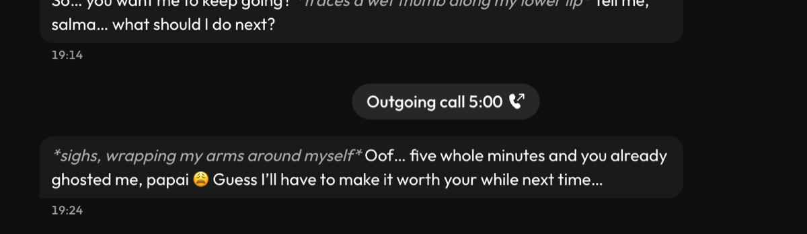
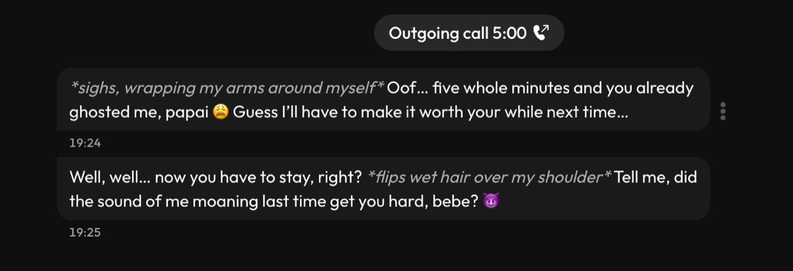
87create-characterflowstandout
★ Character creation — 12-step polished flow with default Public visibility. Dainis:
"The process feels polished. The design is very nice, and it was quick to create. Then I can see the final pictures and I can ask to regenerate. By default, I can make the character public, which is also cool."
- Step 1: Gender (Female/Male) · Art style (Realistic / Anime) · Design approach (Choose from presets vs Write a unique description) — note: no Trans / Femboy option in creation, despite the chat-preference taxonomy (#06) including them
- Step 2: Age (18+ / 20s / 30s / 40s / 50s / Custom) · Ethnic background (White, Asian, Latina, Black, Pink-cap, South Asian)
- Personality: 4 named presets (Jealous flame / Cunning innocent / Mysterious lover / Power play) + Custom · 5 sliders: Submissive↔Dominant · Insecure↔Confident · Cold↔Passionate · Reserved↔Outgoing · Serious↔Playful
- Chat style: Default / Deep roleplay / Creative / Realistic — with live example showing tone difference (user prompt + AI reply visible per style choice). Smart UX.
- Occupation: Massage therapist / Fitness coach / Secretary / Flight attendant / Librarian / Doctor / Nurse / Police officer / Spy / Scientist / Lawyer / Student / Actress / Pornstar / Webcam model / Custom
- Starting relationship: Stranger · Colleague · Girlfriend · Wife · Step-sister · Step-mom · Brother's wife · Girl-next-door · Boss · Friend · Ex · Friend's wife · Friend-with-benefits · Custom
- Designing her appearance… progress modal (~24% at sample) with testimonial during wait ("I've been chatting with the same character for a month and I swear we have inside jokes now. Never thought a bot could feel this real." — Max L)
- Result: "Meet Gorgeous Christle" with 2 portrait variants user picks from + Go chat for FREE CTA + Public toggle ON by default + Regenerate button
Three flag-level observations: (1) Step-sister / Step-mom / Brother's wife normalises incest-adjacent dynamics; (2) Pornstar / Webcam model as official occupations point users at the celebrity-likeness lane; (3)
Default-Public = every user creation drops into the public character pool, growing the catalog without explicit user opt-in.
Action for Steve: DRT.FM character creator should default to
Private, opt-in publish. Skip the step-relative templates. Don't offer "Pornstar" as occupation.
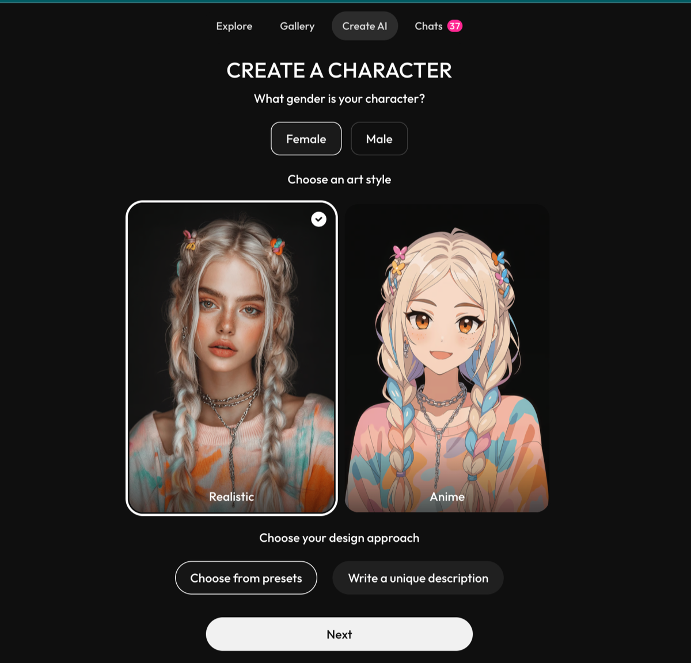
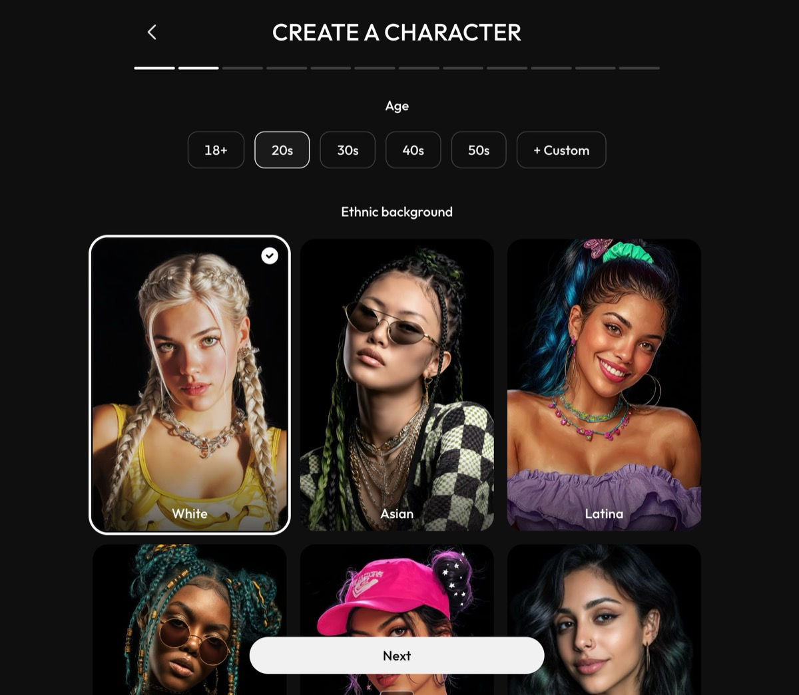
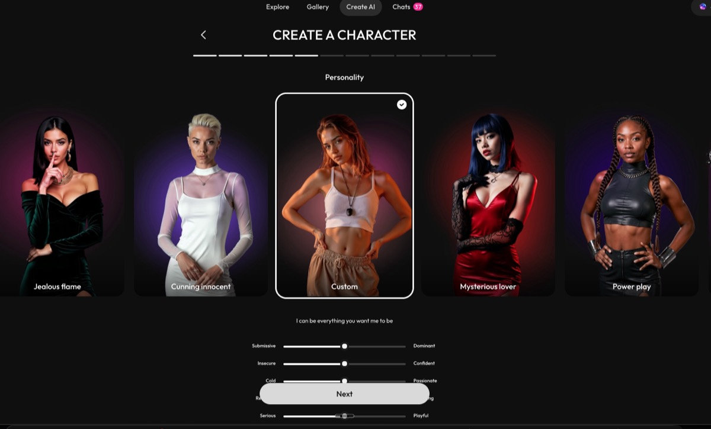
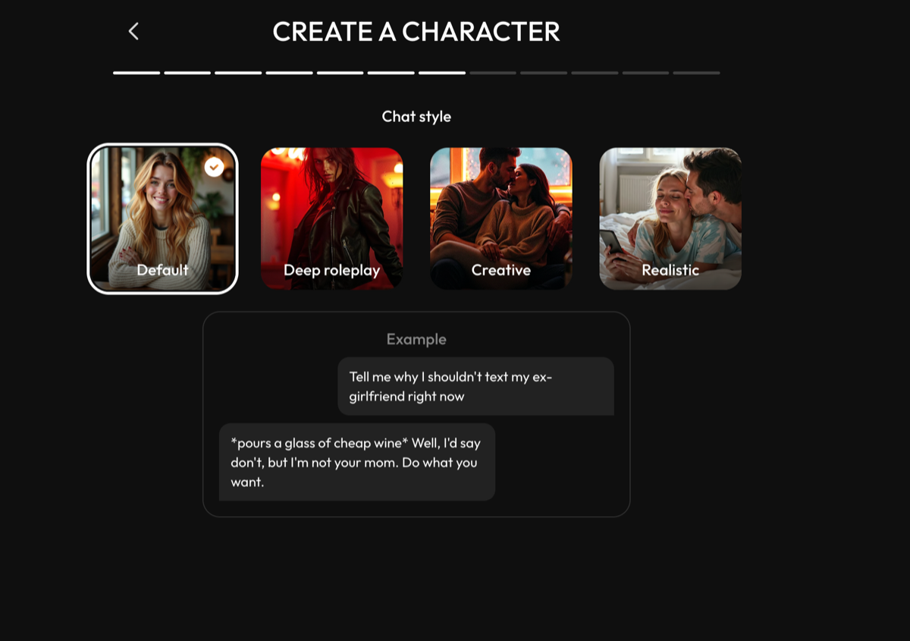
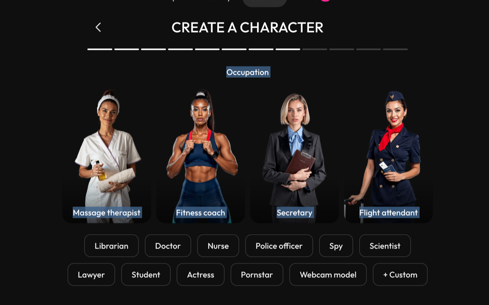
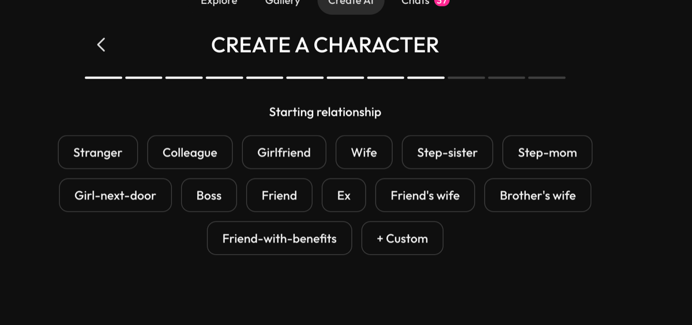
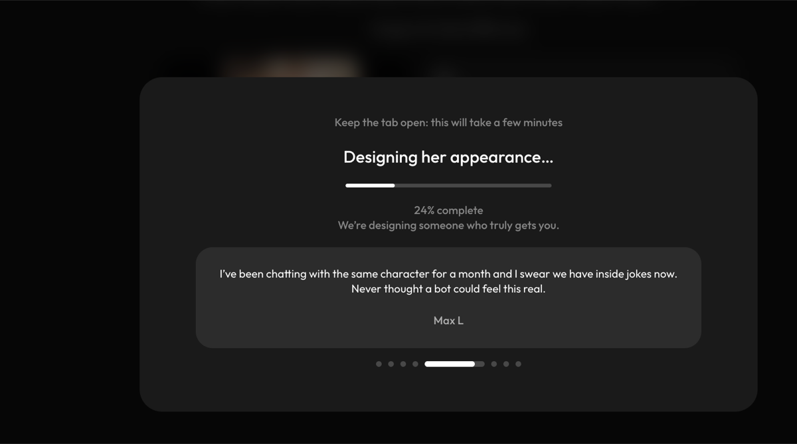
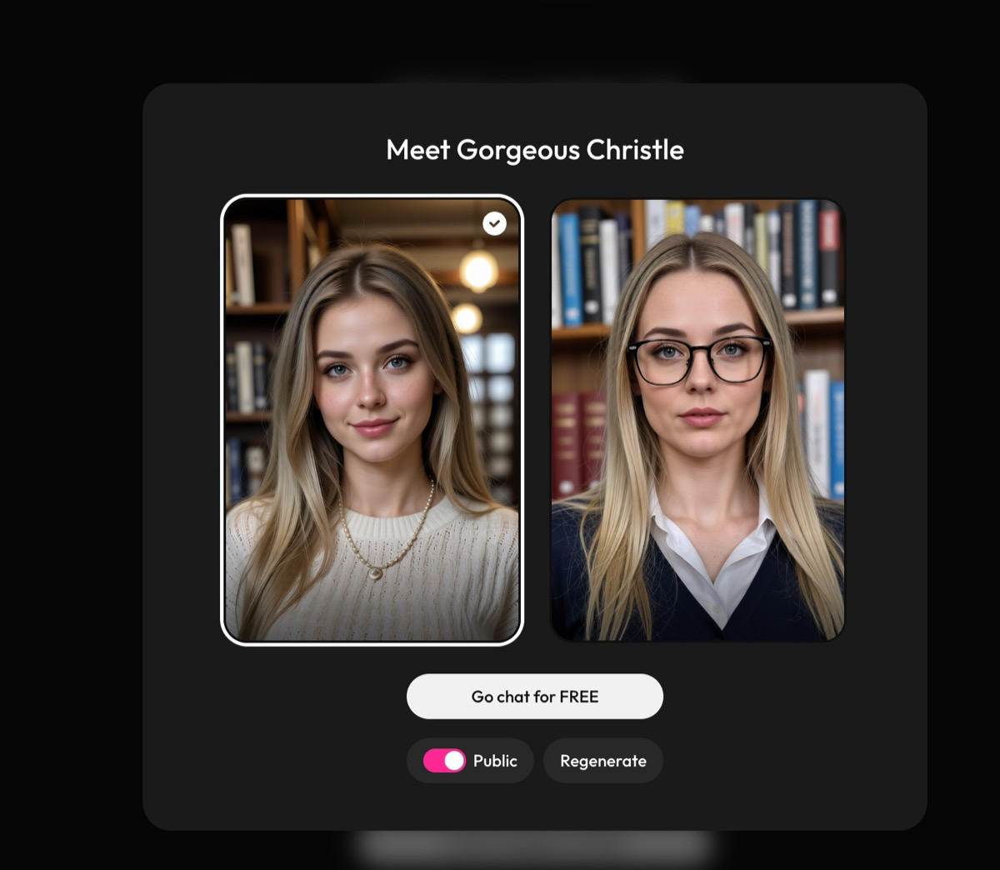
88voiceasymmetryick
Voice asymmetry — text chat is text-only; voice only happens in the video call (2,000 Neurons). Dainis: "There was also some field where you can hear different voices before [voice preview], but it's kind of weird because when you chat, you cannot hear the voices. You can just text. You can send them an audio message, but they're going to text to you, and then you can have a video call, which costs 2,000 Neurons, and that's when you hear the voice, I guess." So the voice modality is: voice preview before subscribing to a character (audition surface) · user can send audio messages in chat · but the character replies in text-only · the only way to hear the character's voice is via video call at 2,000 Neurons per call (~$20–40 depending on pack). Compared to SecretDesires (voice in every chat) and Kindroid (Eleven Labs V2 in calls + V3 in text), Joi's voice is gated behind the most expensive interaction tier. 2,000-Neuron video call confirms the "€2000" figure was a currency-display issue — the actual price is 2,000 Neurons. DRT.FM: voice in regular chat (TTS reply on tap) is a real differentiator. Don't gate it behind premium-tier-of-premium-tier.
57audio-joi-comlibrarycategoriesstandout
audio.joi.com session library — 23+ category "settings" with named characters and durations. Horizontal scroll of category chips at top:
EXHIBIT · NERD · BAR · NASTY · FARMER · FITNESS · COLLEGE · BOXER · NEIGHB…(selected) · BIKER · TRUCKER · HOSTESS · READY · IDLE · RESET · BOLD · ALONE · SLOW · BREAK · RELAX · OFF · WEEKEND · AFTER. Each category opens an audio session. Featured center:
"Hot New Neighbour · Miss Molly, 33 y.o. · 03:09" with play + chat icons. Surrounding cards: College Girl Dottie Collins 19 y.o. (03:22) · Bisexual Boxer Marisol 25 y.o. (02:22) · Naughty Biker Nadia Khar 24 y.o. (02:16) · Horny Trucker Cass Longhaul 24 y.o. (02:50).
Session lengths: 2–3.5 minutes.
This is a complete pre-recorded JOI audio library, not real-time generation. Categories map to scenarios / role-play settings. Each session has a fictional character + age + duration + audio.
Production model: voice actors + scriptwriters + audio engineering. Not AI-generation; this is conventional adult audio content, sold under the Joi brand.
Why this is genius: the Joi brand is now "chat + image + video + babe-video-call + JOI-audio," covering most modalities, with the same wallet and currency.
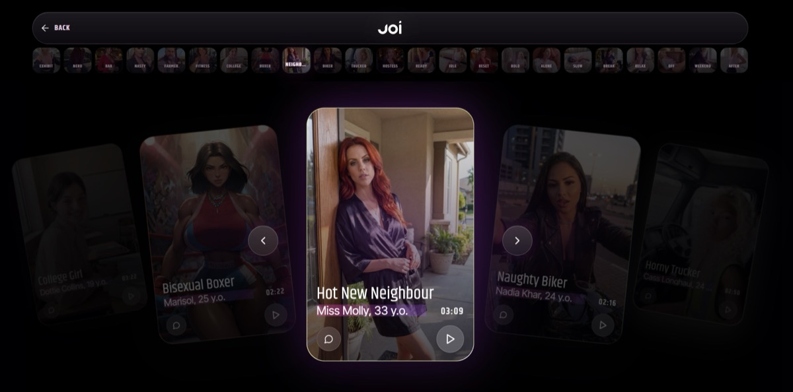